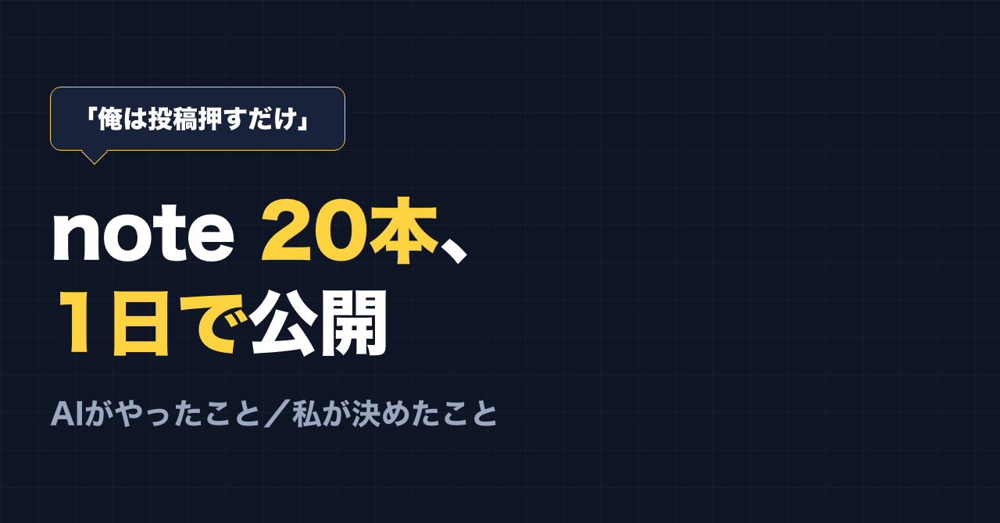
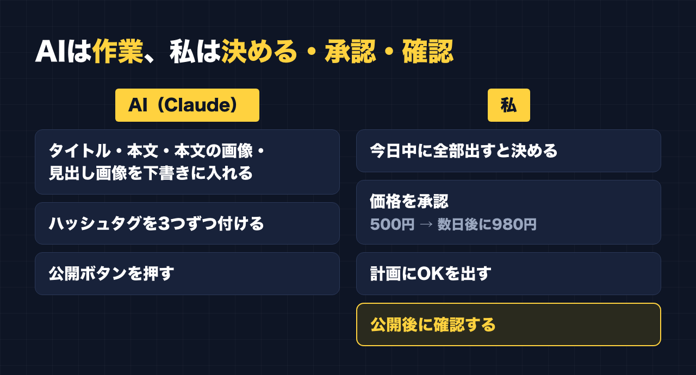

1. タイトルをコピーして、note のタイトル欄に貼る
2. 「本文1をコピー」から順にコピーし、note の本文に貼る
3. 青いラベルの位置に、images フォルダの同じ名前の画像を入れる（本文には貼られません）
※ 見出しが普通の文字になった場合は、その行を選んで「大見出し」を設定してください

「今日中に全部公開」
2026年9月29日、私が AI にそう伝えました。
公開を待っていた note は20本。有料が6本、無料が14本です。どれも下書きの状態で、note の中にすでに入っていました。
そして、その日のうちに20本すべてが公開されました。
公開ボタンを押したのは、私ではありません。AI（Claude）です。
私が言ったのは「俺は投稿押すだけ」
最初に、私の考えをそのまま AI に伝えていました。
「俺は投稿押すだけ」
書く・画像を入れる・note に入れる、といった作業はできるだけ任せて、自分は最後にボタンを押すだけにしたい。そういう意味です。
実際には、最後のボタンすら AI が押しました。私がやったのは、計画を見て「それでいい」と承認することと、迷うところを決めることでした。
AIがやったこと
AI（Claude）に Chrome を操作してもらい、20本それぞれを note に下書きとして入れてもらいました。1本ごとに入れたのは、この4つです。
- タイトル
- 本文
- 本文の中の画像
- 見出し画像
そのうえで、9月29日に20本を公開しました。公開するときには、1本ごとにハッシュタグを3つずつ付けています。
有料の6本は、まず500円で出しました。数日たったら980円に上げる予定です。

私が決めたこと
私の役目は「決めることと、承認すること」でした。
- 今日中に全部出す、と決める
- 有料は500円から始めて、数日後に980円にする、という進め方を承認する
- AI が出してきた計画を見て、OK を出す
手を動かす作業は、ほぼ AI です。私は、何を出すか、いつ出すか、いくらで出すかを決めていました。
私は会社員で、副業は休憩のすきまにやっています。20本を1本ずつ入れて、画像を貼って、公開する作業を、自分の手ではやっていません。
「押すだけ」はできる。でも、確認はいる
ここまで読むと、「全部 AI にやらせれば楽勝」に見えるかもしれません。
でも、そうではありませんでした。
公開したあとで、有料記事の「ここから有料」の線が、実際にどこに入っているかを確かめました。すると、3本で、線が思っていた位置より後ろに入っていました。有料の側に入れるつもりだった最初の見出しが、無料で読める側に出ていたのです。2本では、図も一緒に無料側に出ていました。
ほかにも、本文の中の色の番号が、公開するときに勝手にハッシュタグに変わっていたり、ハッシュタグの入力がうまく入らなかったりしました。色の番号のほうは公開設定の画面で外し、有料の線のほうは公開したあとに確認して見つけ、編集して直しました。
作業は任せられます。公開ボタンも、押してもらえます。ただ、「ちゃんと思ったとおりになっているか」を確かめる工程は、なくなりませんでした。
このときの落とし穴と、確認のしかたは、別の記事にまとめています。有料 note を出す人には、いちばん役に立つ話だと思います。
やってみて思ったこと
AI に任せられるのは「作業」です。何を出すか、いつ出すか、いくらにするかは、自分で決めることになります。
そして、任せたあとは「確認」が残ります。
私の場合は、
- 決める
- 承認する
- 確認する
この3つが自分の仕事でした。「押すだけ」を目指すなら、この3つだけは手放さないほうがいい、というのが今回の実感です。
最後に
ここからは宣伝です。
公式LINEでは、「特典」と送っていただくと、LINE限定のプロンプト5本をお届けしています。
https://lin.ee/RzyA13P
「副業ドラフト」は、AI の質問に答えるだけで、副業に使える強みの棚卸しと Threads の下書きを作るツールです。Threads の下書き3本までは無料で使えます。
https://note-threadssf.onrender.com
Threads では、こうした試行錯誤を日々発信しています。
https://www.threads.com/@shachiku_mao
最後まで読んでいただき、ありがとうございました。